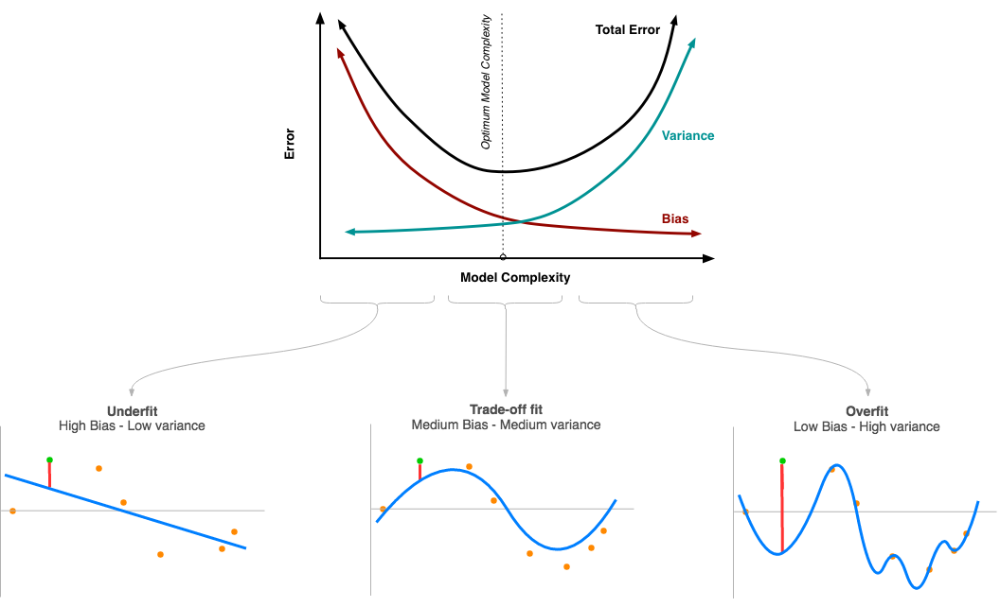

What is Bias, Variance, Overfitting, Underfitting and Bias-Variance Trade-off of a Machine Learning model?
When it comes to Machine Learning (ML) models, we often hear these words that are very basic in building an ML model.
Bias:
It is nothing but the penalty we have to face by wrongly assuming the relationship between the dependent and independent variable. For example, if the actual relation is non-linear, and we assume a linear relation and try to build a linear model, the model can never be able to showcase the actual relation and in this scenario, we have to face the Bias factor. This exists every time when we try to build a machine learning model because we seldom know the actual relation between the variables. If the bias is higher, that means the model is not good and not able to fit the data and is a case of Underfitting.
Variance:
Simply put, it denotes how well a model fit to new data. If a model has high variance, we say that it fit so well to the training data that it is not perfect for new data. It is the case of Overfitting. Variance actually tells us if the model generalizes good. Variance is also one of the key factors to consider in evaluating a model. Low variance is also a scenario that it has high bias because if the model can fit to any new data, at same level, that means the model is not able to describe the data well.
So, to avoid both extreme situations, we need a trade-off, not overfitting and no underfitting. Let’s see how we can take the models to the trade-off point.
To visualize, the scenario looks like below. 
As bias decreases, the variance increases and vice versa. At one point both of them converge and the total error sees it lowest point.
To build this graph, we need model complexity as a factor. Complex models are usually termed as less interpretable and vice versa. For example, if we choose a model that is too complex like deep learning models or non-linear models like polynomial regression etc., which are hard to interpret, then we face the problem of high variance. However, recent advancements help to generalize these complex models well too. But general understanding is if we start building a simple or less complex model and evaluate it against bias and variance or error, and gradually increase the complexity like going for non-linear methods, we will reach a point where we can estimate the trade-off point.